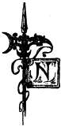

Sacred Texts Legends and Sagas Index Previous Next
Buy this Book on Kindle

Folk Tales From the Russian, by Verra Xenophontovna Kalamatiano de Blumenthal, [1903], at db-sacred-texts.li/neu
DIMIAN THE PEASANT
|  |
He was harsh by nature, this Dimian, and wanted everything to go his own way. If any one talked or acted against him, Dimian's fists were soon prepared for answer.
Sometimes, for instance, he would invite one of his neighbors and treat his guest with fine things to eat and to drink. And the neighbor in order to maintain the old custom would pretend to refuse. Dimian would at once begin the dispute: "Thou must obey thy host!" Once it happened that a shrewd fellow called on him. Our moujik Dimian covered the table with the very best he had and rejoiced over the good time he foresaw.
"Well, I struck a snag"
The fellow guest speedily ate everything up. Dimian was rather amazed, but brought out his kaftan.
"Take off thy sheepskin," said he to the guest; "put on my new kaftan."
In proposing it he thought within himself:
"I will bet that this time he will not dare accept; then I will teach him a lesson."
But the fellow quickly put on the new kaftan, tightened it with the belt, shook his curly head and answered:
"Have my thanks, uncle, for thy gift. How could I dare not take it? Why, one must obey his host's bidding."
Dimian's temper was rising, and he wanted at any rate to have his own way. But what to do? He hastened to the stable, brought out his best horse, and said to his guest:
"Thou art welcome to all my belongings," and within himself he thought, "He certainly will refuse this time, and then my turn will come."
But the fellow did not refuse, and smilingly answered:
"In thy house thou art the ruler," and quickly he jumped on the horse's back and shouted to Dimian, the peasant:
"Farewell, master! no one pushed thee into the trap but thyself," and with these words the fellow was off.
Dimian looked after him and shook his head.
"Well, I struck a snag," said he.